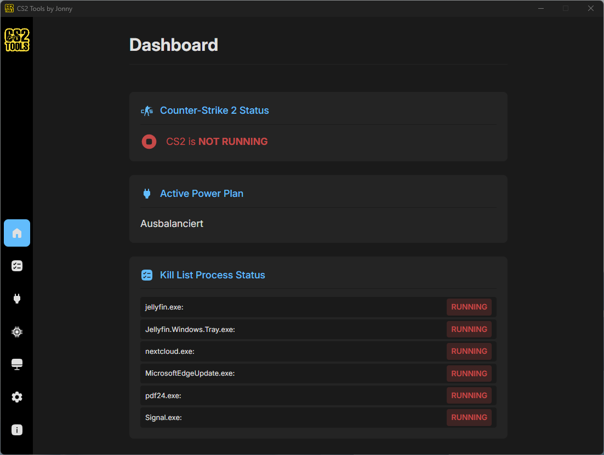
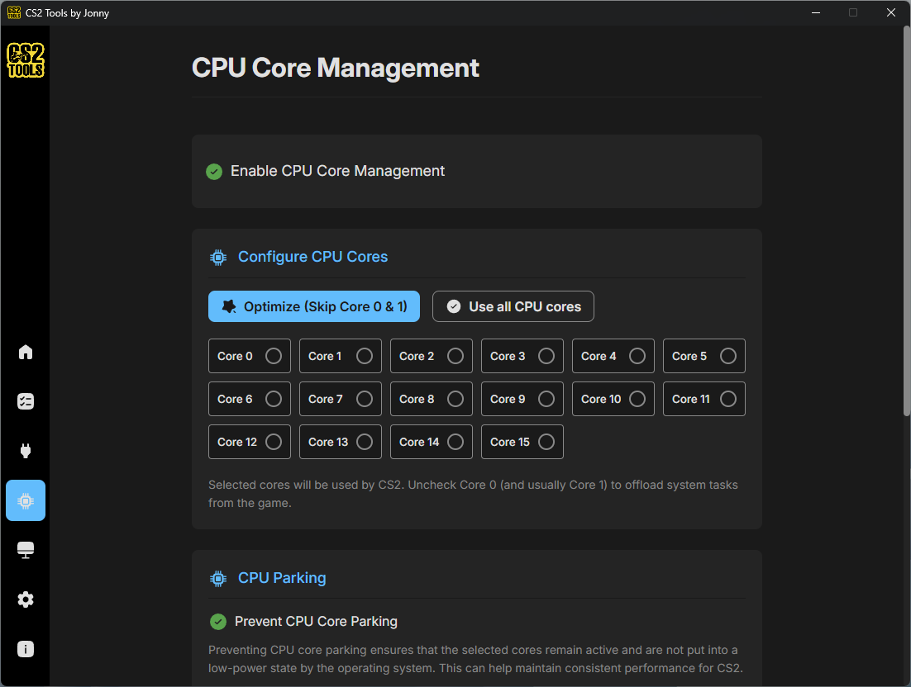
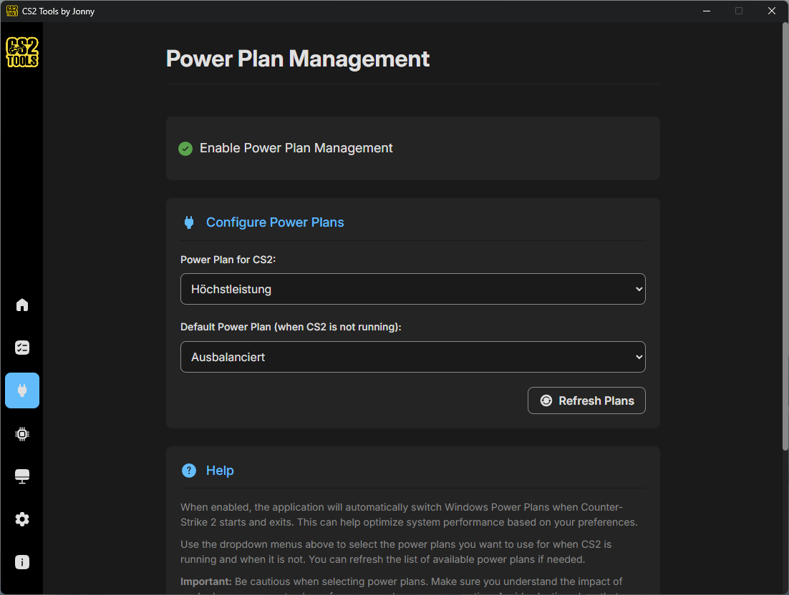
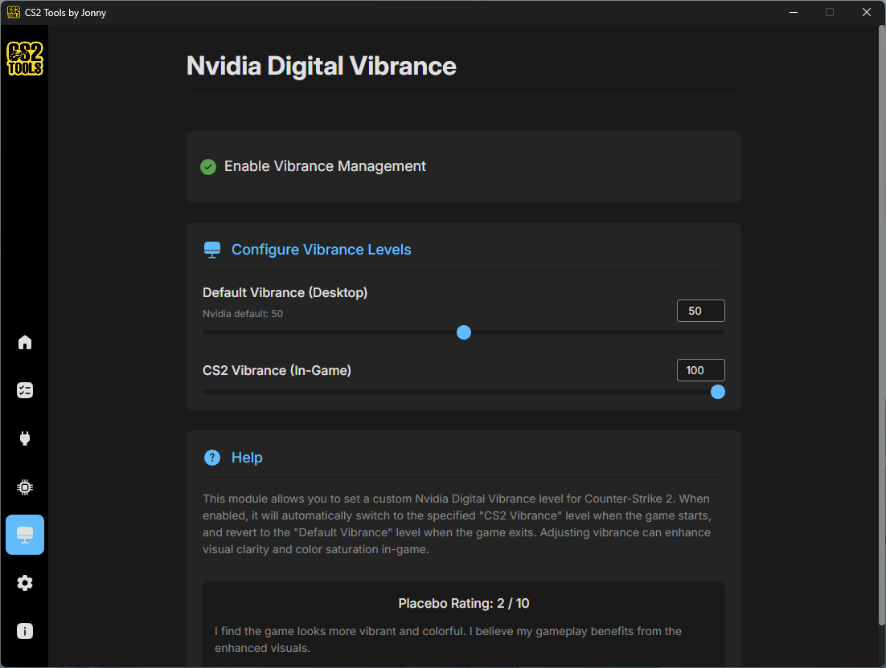
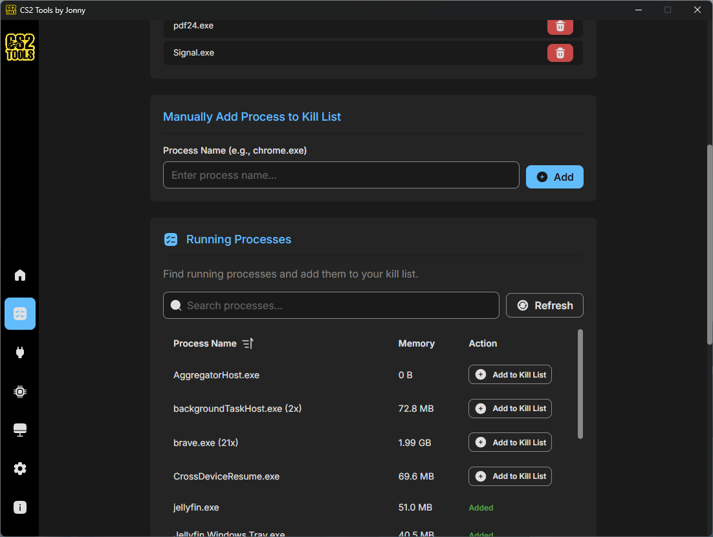

A lightweight Windows utility that swaps power plans, pins CPU cores, kills bloat processes, and bumps Nvidia vibrance the moment CS2 launches — and reverts it all when you're done.

Five focused tweaks that touch the parts of Windows that actually move framerate and input latency.
Pin CS2 to the exact cores you choose. Skip cores 0 & 1 to leave them for the OS — or use all of them if you prefer.
Auto-switch to High Performance when CS2 starts and back to Balanced when it closes. No manual toggling.
Define a list of background bloat — Discord overlays, sync clients, browsers — and have them shut down on launch.
Bumps saturation only while CS2 is the focused window, on the monitor running CS2. Alt-tab away and your normal vibrance comes back instantly.
See what's running, what got killed, and which power plan is active — all from a single overview screen.
Built with Tauri (Rust + Vue), not Electron. Under 20 MB on disk and barely a blip on memory — because optimizing perf with a bloated app would be absurd.
When CS2 exits, every setting goes back to your defaults. No admin rights, no permanent “gaming mode.”
The app sits quietly in the background and watches for the CS2 process. That's it.
Toggle the modules you want — CPU pinning, power plans, kill list, vibrance. Each one is independent.
From Steam, a shortcut, wherever. The app detects the process and applies your settings within a second.
When you close CS2, everything reverts. Power plan, vibrance, killed processes — all back to normal.
Every module has its own screen. No nested menus, no hidden toggles, no surprise behavior.




Microsoft Store is recommended — the binary is signed by Microsoft, so no SmartScreen warnings.
Signed by Microsoft, auto-updates, no SmartScreen warning. The easiest and safest path for most users.
Get from Microsoft StoreDirect download from GitHub Releases. Note: Windows SmartScreen may warn — the binaries aren't code-signed.
Latest releaseClone the repo and build it yourself. Full source on GitHub for anyone who wants to verify or contribute.